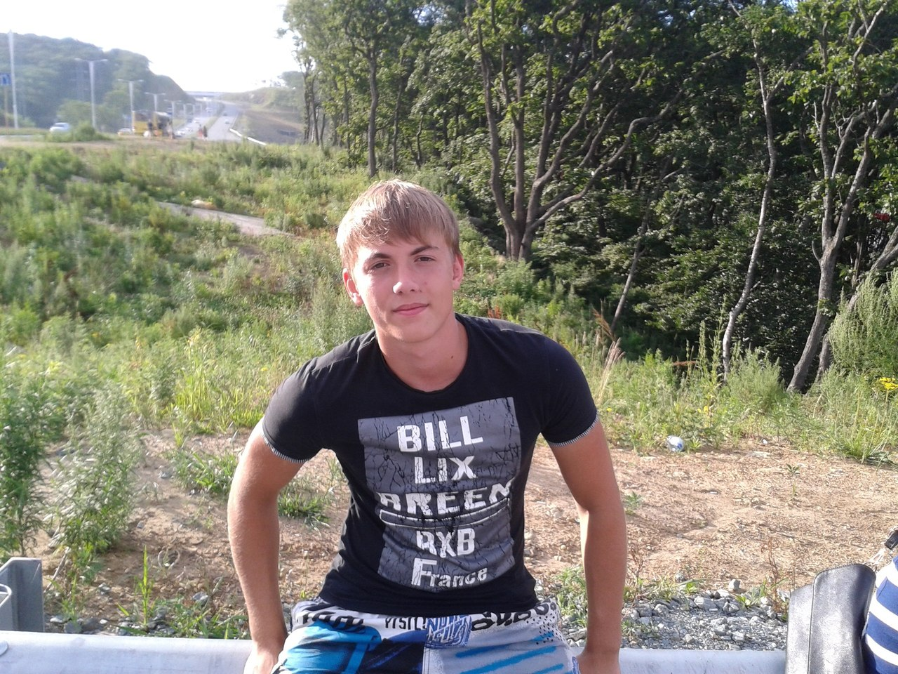

| |

|

|
Коренякин Семён Александрович

Родился в городе Владивосток 19 декабря 1997 года. Ходил в школу интернат №1 на Баляева до 8 класса,
затем перешел в школу №67 на Жигура и проучился там до 11 класса. С 12 до 14 лет занимался
рукопашным боем в школе №22. C 14 до 17 лет занимался Кудо. После школы поступил во ВГУЭС на
экономическую специальность и доучился до 3 курса. На первом курсе учился в автошколе АНИК на
получение водительских прав. На 3 курсе решил уйти со ВГУЭСа и поступить в ДВФУ по программистской
специальности.
- Учусь программировать
- Читаю в свободное время
- Играю в свободное время
- Гуляю иногда
- Зимой катаюсь на сноуборде и коньках
- Летом катаюсь на сапе и на велосипеде